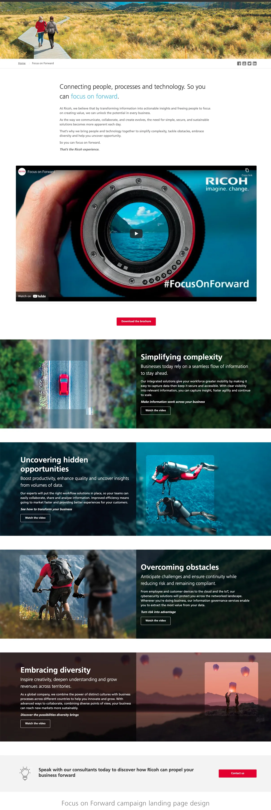
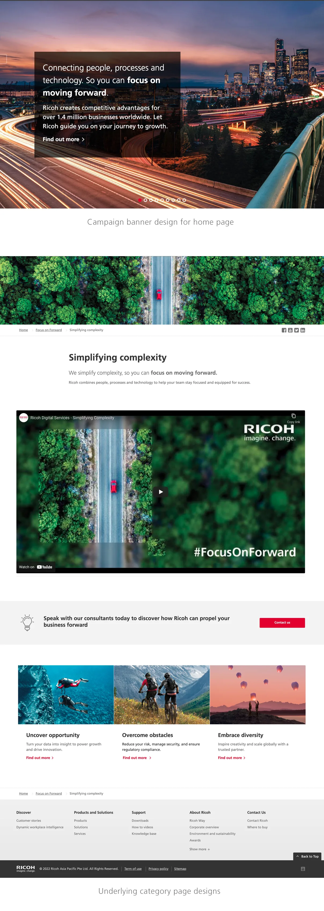
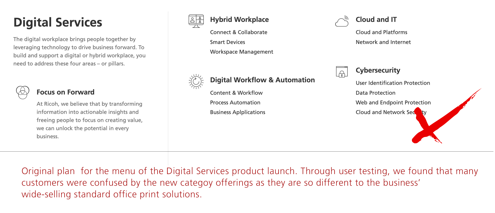
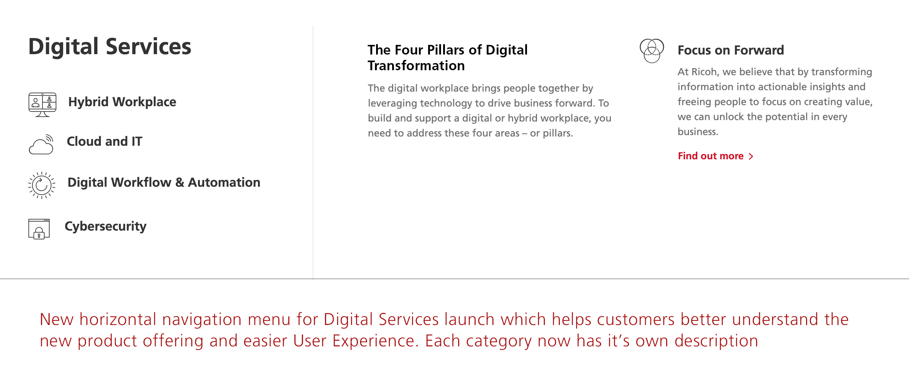
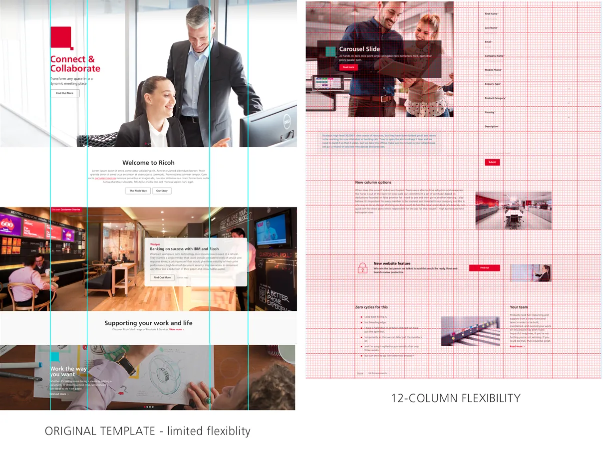
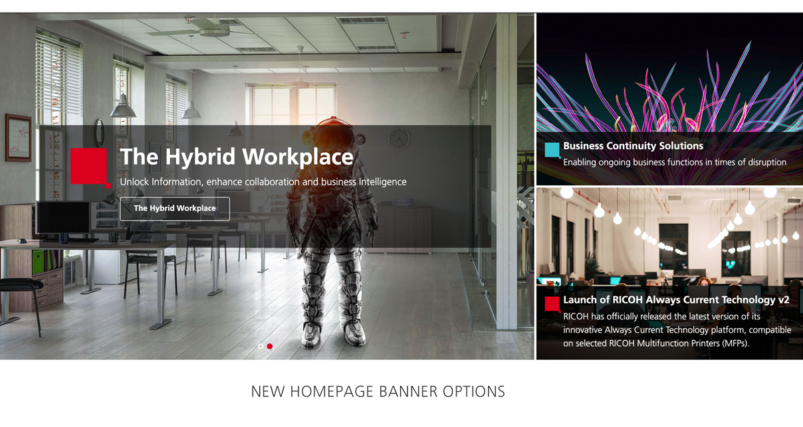
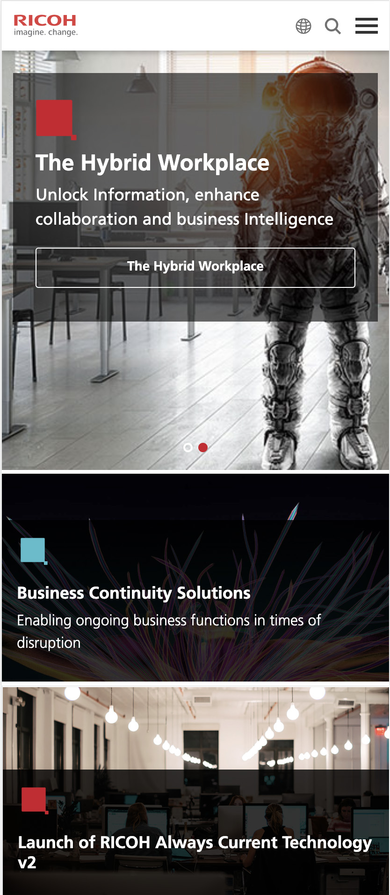
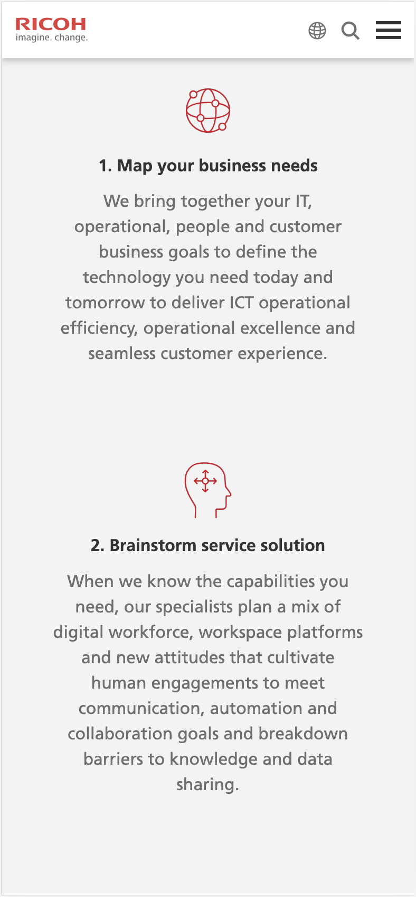
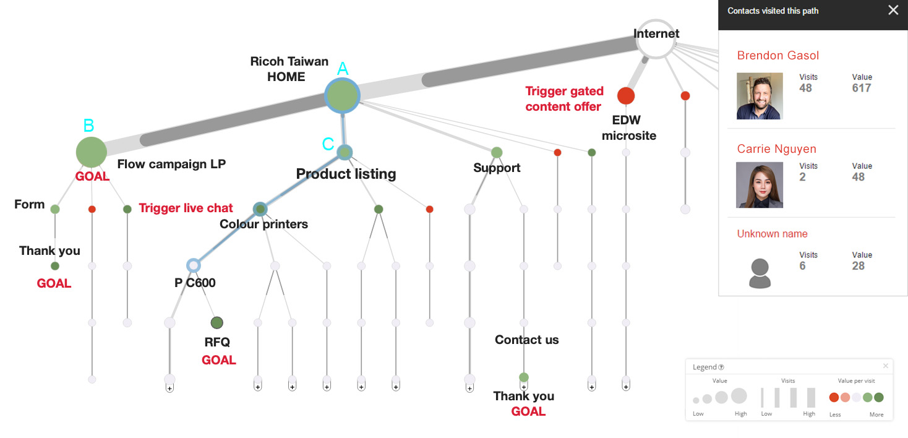

I worked at Ricoh in the APAC regional team in a web management and design role, leading the regional website rollout and I both consult for and project manage the 9 other OpCo websites on the platform including Taiwan, Hong Kong, Thailand and other countries throughout APAC.
A large part of my ongoing role was to continually improve the UX and UI of the fresh regional sites and also to lead the region in digital brand management, ensuring that all OpCo skateholders kept a consistency of design which not just adhered to our brand styleguide, but also kept up do date with modern web best UX and visual practices as well as WCAG guidelines . I build and maintain the regional design system for APAC use.
Focus on Forward / Digital Services launch
Collaborating with an external agency, I was asked to design and build the User Interface for a brand new set of business offerings that Ricoh was hoping would showcase a new business direction for them. Previously having been very successful in the office printing and office solutions trade, Ricoh was now attempting a transformation to become a major competitor in the digital services field.
We brainstormed, wireframed, planned out and created new imagery and templates using the design system to be used for the campaign. The campaign was a complete departure from Ricoh's standard brand designs to announce a big change in direction for the business.


The unique look and feel which set it apart from Ricoh's current solutions was able to generate interest and curiosity from both regular and new customers, letting the world know that Ricoh was steadily moving to a new space while still being reliable for clients that still depended on it's standard product line.


After doing rounds of competitor research, I thought that turning the menu from a vertical design to a horizontal one might be the best to tackle this. The contents of the main navigation box could change dynamically depending on which navigation list item the user was hovering over. This created some room in the navigation box to add the underlying child categories, or to add more featured marketing content.
Customers could now immediately read about the new category offerings and would be less confused as to the direction of their reliable business partner.
UI Enhancement - layout & design flexibility
One of the hurdles that we encountered as we started rolling out regionally was to do with the many different layout designs that we needed to migrate. We intended to standardise the layouts in terms of keeping our own modern templates so that the brand would have regional consistency, but at times the team was finding itself limited as we started to create & migrate different marketing campaigns which often had a requirement to stand out from the rest of the site. To help alleviate this, I first used our existing component library to design fresh new templates which could be easily reused throughout the region.
In order to give more freedom of UI for our trusted designers, I understood from my experience as a developer that creating a 'difference' in layout design did not necessarily need to come from building a hundred new page components. What always made a difference was the grid and margins that each layout adhered to. Allowing more flexibility in layout columning would allow for a more interesting use of white space, different alignment of components including with asymetrical balance, would avoid repetition and allow some more movement into the designs.

To achieve this I used the bootstrap css library as a kind of benchmark to design advanced layouts which allowed for 12 columns to design with. Previously, the desktop layout would only allow for set containers at full screen width, mid-width and then narrow containers (usually for text). All layouts were set within those parameters (see above).
The majority of pages would still use the original templates provided as they did maintain a brand consistency and general tidiness, but where needed designers could now build pages which challenged the normal design structure for bespoke pages and campaigns. One of the most important use cases for the new columning options was the new main banner we designed which was eventually shown on all regional home page sites, using a 8 - 4 columning option to present multiple goal-oriented landing pages.
Main banner redesign
Through our data analysis of visitors to our home pages, we were discovering that only the first full-width banner option on the home page was getting significant click-through traffic. Users were not taking the time to visit the second rotating carousel banner behind it, much less the third or fourth banners. Yet the business always had multiple goals and CTAs inserted throughout the site that they needed to direct users to.
We used the new 12-column layout option to design a new banner which still allowed for an 'essential' eye-catching banner image which would attract users on page load, but now marketing teams would have the option to add other campaigns or page banners vertically next to it which contained links to other important marketing CTAs.

We did run into a pain point where we found it difficult to design this banner for mobile responsive screens, especially as the original design included 3 (or more) vertical banners. After going through various design options, we found that limiting the vertical banners to 2 not only created a suitable amount of real estate for the imagery and copy, but allowed for a smooth vertical scrolling transition on mobile screens (see below).
Mobile responsive UX
An issue that we needed to address when migrating the legacy websites to Sitecore CMS was that many of the legacy websites were not built to be fully mobile responsive. As so much of our traffic now comes from devices rather than desktop screens, I took a long time to address layout, banner and even infographic redesigns for responsive layouts in the new sites.


User journeys and the Path Analyser
A great tool that Sitecore CMS offers is the ability to plan and track individual user journeys through the website. They are trailed from entry point through each page, tracked for which marketing goals they activate, how many engagement points they accrue from their interactions, and whether or not they trigger website form submits. Often the most valuable goals were set on the form's Thank you pages which are shown only after a lead is generated.
Through this tool, I was able to map out and plan the journeys of different users and personas throughout the website. How should they access a particular CTA? Where is the best place to present them a form fill? How to guide them to more information about this product? Once we activated the Path Analyser, we were able to see through the engagement scores and paths that the users took whether or not our Information Architecture was successful in leading or attracting the customer to the stakeholders marketing goals.

- If the path had low traffic and seemed unsuccessful, we could start to analyse why this was the case? Where were the users dropping off?
- Was a certain section missing a CTA, or was it displayed wrongly?
- Was the content not appealing enough?
- Was the architecture convoluted in some way so that the user simply got confused and gave up?
- Does the section or page need a design revamp to make it visually appealing?
- Was it simply a matter of more promotion for the section on the home page?
- At the least we could then pinpoint where the problem was, and research how to improve it. Also if a path was getting a lot of interest or traffic we would understand to optimise this path with other relevant CTAs to lead the user to other valuable content if interested.
With the use of the Path Analyser, we could also start to understand how to build personas into the website. What was the most valuable path for each persona, and what kind of content could we personalise for them in order to guide them to their Persona website goals? We are able to structure the entire path or site so that the user has a personalised journey depending on the type of solution which they might be interested in. should be approached for their other products.
SEO enhancement project
After regional rollout was complete we found that certain regional websites were performing poorly in SEO visiblity. As SEO is a major part of modern UX, I was part of a project team to ensure that that this section was better taken care of and improved. We attacked this problem through a number of different tickets.
- Created a new section on the Product Listing page for a keyword-filled description underneath the h1, which would dynamically change according to the category
- Organised a tool to import side-wide Meta Description through a spreadsheet so that page descriptions would remain up to date, and any pages missing one would have it added. Pages with repeating templates (eg, Products or Blog articles) may have descriptions drawn dynamically from in-page content
- Designed a tool to make sure that all inline imagery would automatically draw an Alt tag from the h1 of the page if it was missing
- Organised for schema data to be added through the back-end of the website, giving seach engines more accurate descriptions of on-page content
- Ensured that all pages unpublished from the live site have a redirect set on them so that search engines will not return 404 pages for content which no longer exists
- Designed a tool to automatically generate short URLs so that dates and query strings would no longer appear in website URLs.